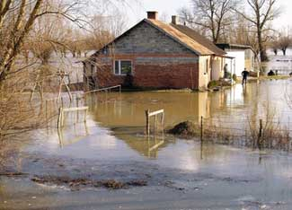

FOTOLIA
Recently when damaging floods inundated nine Midwestern states, farmers in those areas were forced to come to grips with the damages to their crops and homesteads. You can help by making a donation to Farm Aid.